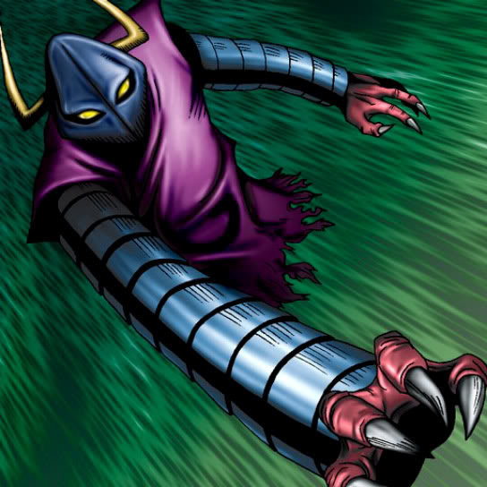

Claw Reacher

STATS
ATK: 1000
DEF: 800DECK COST
Deck Cost per Card: 18Fusion List (5 Possible Fusions)
- Claw Reacher + Dark Rabbit = Chimera the Flying Mythical Beast
- Claw Reacher + Firegrass = Rose Spectre of Dunn
- Claw Reacher + Fungi of the Musk = Darkworld Thorns
- Claw Reacher + Tentacle Plant = Rose Spectre of Dunn
- Claw Reacher + Winged Dragon, Guardian of the Fortress #1 = Koumori Dragon